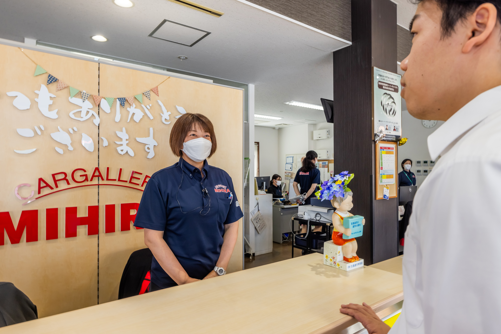
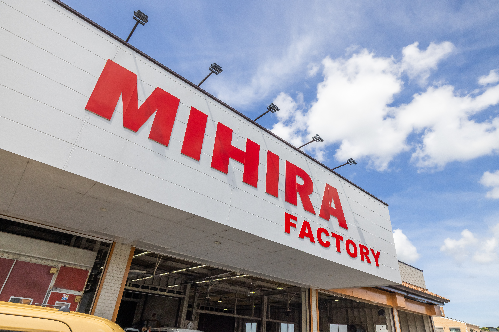
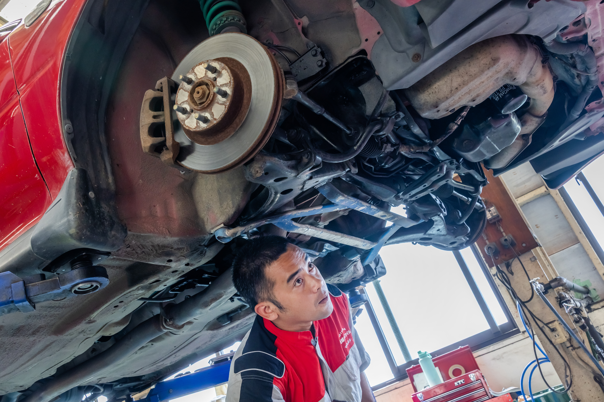
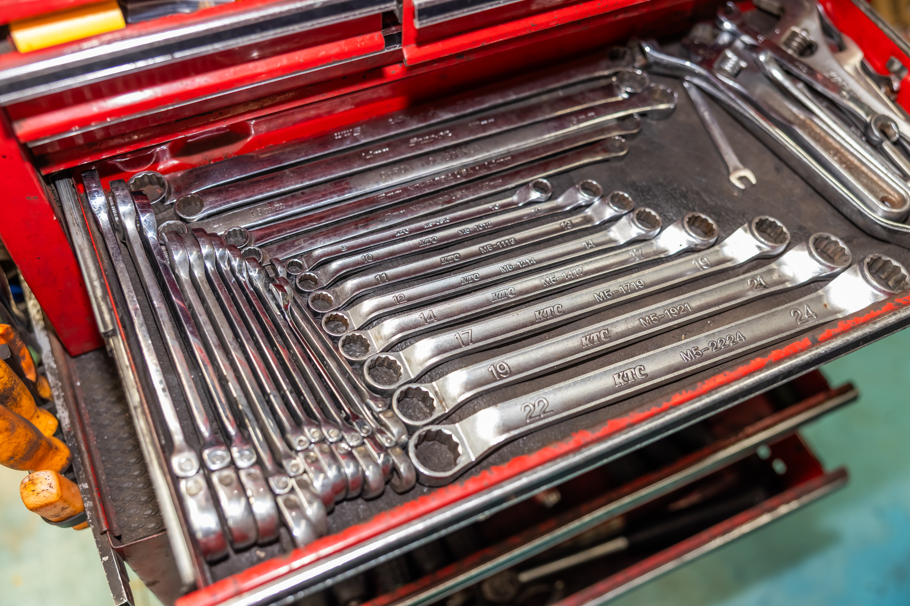

01
入庫・受付エリア
ご来店されたお客様を最初にお迎えする受付。車の状態やご要望を丁寧に伺い、整備スタッフへつなぎます。
FACTORY TOUR

WELCOME
カーギャラリーミヒラの整備工場を、写真で一周できるページです。入庫からお渡しまでの流れに沿って、働く場所をご紹介します。

ご来店されたお客様を最初にお迎えする受付。車の状態やご要望を丁寧に伺い、整備スタッフへつなぎます。

車検・法定点検・一般整備などを行うメインの作業エリア。幅広い車種に触れながら経験を積めます。

専用設備を備えた鈑金・塗装エリア。修復から仕上げまで専門技術を磨ける環境です。